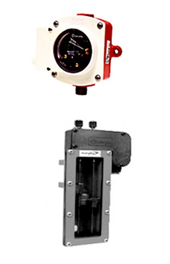

Productos
Plantas electricas Portatiles
Plantas electricas Recidenciales
Plantas electricas Comerciales
Plantas electricas Industriales
UPS
Climas de presisión
Smart Solution
Acondicionadores de voltage
Sistemas fotovoltaicos
Controladores
Bombas de agua
Unidades de distribución (PDU)
Productos
Plantas Electricas PortatilesPresión y vacio
Marcadores mecánicos o eléctricos, marcadores para computadoras electrónicas y senders para aceite o gas.
Proteja a su motor de una baja presión de aceite y de las consecuencias económicas y en desempeño que pueda traer, como un motor desvielado.
El equipo Murphy le proporciona las siguientes características:
- Combina el monitoreo con un interruptor de límite.
- El interruptor de límite para presión baja es visible y ajustable en campo (en la mayoría de los modelos).
- El interruptor puede activar alarmas y/o paros del equipo.
- Excede las normas SAE.
- Cuerpo de Policarbonato resistente a la corrosión con brida de montaje de acero incluida.
- El Bisel estándar, acero inoxidable platinado (lo que lo hace más duradero y eficiente).
- La aguja es de plata niquelada para su continuidad y resistencia a la corrosión.
- El lente es de policarbonato de alto impacto.
- Diafragma de Berilio de Cobre.
Nivel de fluidos
Deales para el control, protección y mantenimiento de niveles de combustible, aceite y agua en su equipo.
Interruptor de nivel de bajo limite.
Opera por medio de un flotador de laton, cuerpo de aluminio de poliuretano, lente policarbonato, con interruptor SPDT.
- Monitorea el nivel de refrigerante, aceite lubricante, combustible y fluido hidráulico.
- Disponible en modelo a prueba de explosión.
Indicador de nivel con interruptor por bajo y alto nivel de aceite, flotador de bronce. Por medio de la mirilla se pueden ver las condiciones del aceite.
- Checa el nivel de lubricante sin parar el motor.
- Ideal para motores, bombas y compresores.

Tiempo, vibración y velocidad
Tacómetros análogos y digitales, sensores de impacto y vibración, sensores con protección de sobrevelocidad.
Tacómetro analógico con horometro, alimentado por señal de sensor magnético.
- Sensa una señal por sensor magnético o alternador.
- Lectura analógica de alta visibilidad.
- Movimiento de aire.
- Fácil calibración.
- Iluminación a través de la carátula.
- Energizado por 12 VCD y para sistemas de 24 VCD,
- Disponible el convertidor de 24 a 12 VCD.
Tacómetro digital de fácil calibración. Su alta exactitud es el resultado de usar una pantalla de cristal de cuarzo con componentes digitales electrónicos de estado sólido.
- Exactitud de + - 1 RPM
- Pantalla de cristal líquido fácil de leer.
- Iluminación posterior para lectura nocturna (en algunos modelos)
Interruptores magnéticos y anunciadores
Switchs para sistemas de protección de motor y anunciadores de falla de arranque, falla por temperatura, presión de aceite o niveles de líquidos.
Los interruptores magnéticos y los anunciadores Murphy son nervio central que traducen las operaciones de contactos de los SWICHGAGE para operar una alarma o paro del equipo.
- Dispositivos tipo relevador disparados eléctricamente.
- Operan desde suministro de batería, 120VCA, magnetos convencionales e igniciones del tipo descarga de capacitor.
- Se pueden usar en motores de combustión interna o motores eléctricos.
Tableros
CDiseñamos e instalamos tableros de control para cualquier tipo de maquinaria o proceso. Ayuda a la prevención de daños en los motores, periodos de inactivación y reparaciones costosas, para cualquier unidad móvil como camiones, autobuses, montacargas, etc.
Se fabrican de acuerdo a sus necesidades.
Controladores
Para motores diesel, compresores e incluso plantas eléctricas.
Controlador automático para motores, ideal para generadores pequeños o paneles para motores. Diseño compacto que operan en 12 o 24 vcd. Protege por:
Sistema sofisticado de control y monitoreo electrónico de las funciones vitales de su equipo.
Válculas
Válvulas check o controladas neumáticamente o eléctricamente para el corte de combustible diesel o gas.
Para motores a base de diesel, una válvula normalmente cerrada que se abre cuando es suministrada corriente de la batería a través de un interruptor magnético. Selección entre modelos de 12 o 24 VCD.